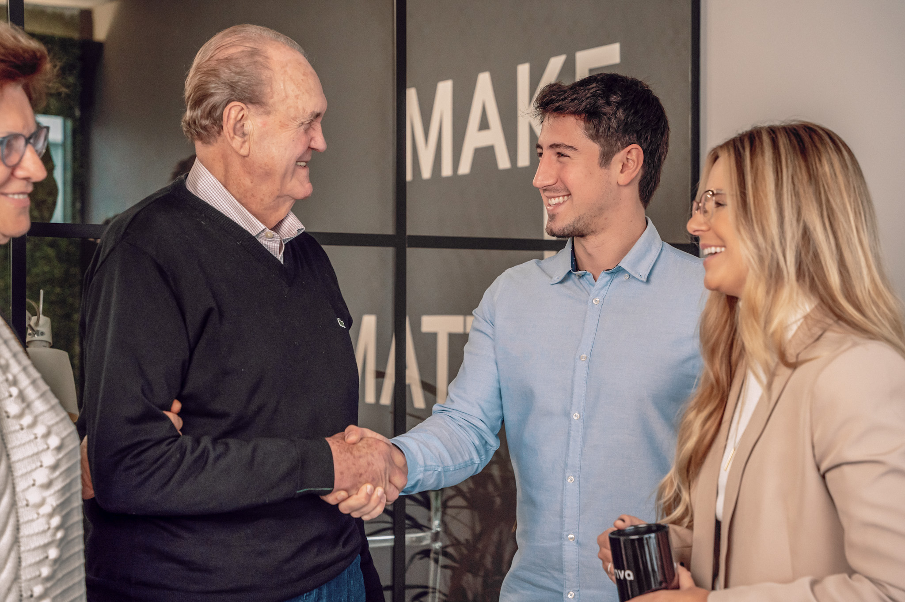

SEGURANÇA DIGITAL
Perdeu o acesso à sua conta?
A gente resolve.
Especialistas em recuperação e blindagem de contas digitais. Atendimento humanizado e diagnóstico gratuito.
- Diagnóstico gratuito
- 98% de taxa de sucesso
- Atendimento humanizado
O QUE ACONTECEU COM VOCÊ?
Cada caso tem um caminho. A gente conhece todos.
Clique no seu problema e fale direto com um especialista — a mensagem já vai pronta.

PLATAFORMAS
Sua plataforma está na lista?
Não importa a rede: temos experiência para resolver. Passe o mouse (ou toque) para ver.
Recuperamos contas do Instagram todos os dias.
Recuperar conta do Instagram+ outras plataformas sob consulta
COMO FUNCIONA
Do desespero ao alívio, passo a passo.
Acompanhe a sua conta voltando para as suas mãos — é assim que trabalhamos em cada caso.
Contato inicial
Fale conosco pelo WhatsApp. Entendemos sua situação e tiramos suas dúvidas.
role para avançar as etapas
Diagnóstico gratuito
Antes de cobrar, a gente entende o caso.
Analisamos o que aconteceu, as chances reais de sucesso e o caminho — e você só decide depois. Transparência é parte do método.
SERVIÇOS
O que fazemos por você
Cada card abre uma conversa no WhatsApp já com o assunto certo.
DIAGNÓSTICO RÁPIDO
Responda 4 perguntas e descubra o seu caminho.
Leva menos de 30 segundos. No final, você fala com um especialista com o contexto já mapeado.
Pergunta 1 de 4
Qual plataforma foi afetada?
DEPOIMENTOS
Quem já teve a conta de volta
Histórias reais — algumas contadas em vídeo pelos próprios clientes.
“Recuperaram minha conta em menos de 48h! Eu já tinha tentado de tudo sozinha e estava desesperada. A equipe foi super atenciosa e resolveu rapidamente.”
“Meu WhatsApp foi clonado e estavam aplicando golpes nos meus contatos. Em poucas horas tudo foi resolvido. Recomendo demais!”
“Perdi minha conta com mais de 50 mil seguidores. Achei que nunca mais ia recuperar. A MVA conseguiu em 3 dias! Profissionais incríveis.”
“Minha conta do TikTok foi desativada sem motivo. A equipe entrou com recurso e em uma semana estava tudo normalizado. Serviço excelente!”
SOBRE
Manuela Viegas
CEO & Especialista em Segurança Digital
Há mais de 5 anos, ajudo pessoas e empresas a recuperar o controle de suas contas digitais. Sei o desespero que é perder acesso a uma conta que representa anos de trabalho e memórias. Por isso, minha missão é oferecer um atendimento rápido, humanizado e com alta taxa de sucesso.
OAB-RS 107.972 · OAB-SP 496.603
PERGUNTAS FREQUENTES